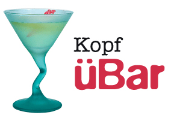

Die KopfüBar ist zweifellos der größte Trendsetter in Webville. Kehren Sie ein und probieren Sie unsere reichhaltige Auswahl an Elixiren, Tees und Kaffees oder bleiben Sie etwas länger und genießen Sie das multikulturelle Feinschmecker-Menü, das Geschmacksharmonie, Textur und Farbe mit den frischesten und gesündesten Zutaten verbindet.
Während Ihres Aufenthalts in der Bar genießen Sie eine elegante Mischung stimmungsvoller und mystischer Musik, die die Bar durchflutet und Ihrem Geschmacksvergnügen eine zusätzliche Tiefe verleiht. Das Ambiente der Bar sorgt für eine entspannende Atmosphäre. Und denken Sie daran, dass Sie in der Bar freien drahtlosen Internetzugang haben. Bringen Sie also Ihren Laptop mit.
Wir garantieren, dass wir in der Bar alles tun, um unseren Gästen jeden Besuch zu einem außergewöhnlichen Erlebnis zu machen. Ganz gleich, ob Sie nur kurz vorbeischauen, um bei einem Elixir Ihre E-Mails zu lesen, oder ein ungewöhnliches Abendessen zu sich nehmen wollen, unser sachkundiges Personal achtet auf alle Details. Und wenn Sie nicht vollständig zufrieden sind, laden wir Sie zu einem Blaubeer-Engelselixir ein.
Aber das ist noch nicht alles. Stoßen Sie am Abend zu uns, wenn unser Haus-DJ seine exquisite Auswahl an Trance- und Drum&Bass-Beats über unsere geräumige Tanzfläche im Tiki-Style legt. Oder hängen Sie einfach in einem unserer bequemen weißen Ledersessel an der Tanz.Bar ab. Sie können sich unsere Elixire direkt aus der eigentlichen Bar auf die Tanzfläche bringen lassen. Und wenn Sie genug Musik gehört haben, kehren Sie einfach zur Entspannung in den Bar-Bereich zurück. Und ganz gleich, wo Sie sich in der Bar befinden, können Sie jederzeit drahtlosen online gehen.
Jetzt haben Sie die Bar virtuell erlebt. Ist es da nicht an der Zeit, uns einen reellen Besuch abzustatten? Wir sitzen direkt im Herzen von Webville und haben eine ausführliche Wegbeschreibung, die Sie in Rekordzeit zu uns führt. Reservierungen sind nicht erforderlich, kommen Sie jederzeit vorbei und statten Sie uns einen Besuch ab.
Der ultimative Gesundheitstrank. Dieses Elixir kombiniert verschiedene Kräuter, Mineralien und Vitamine mit einem Spritzer Limone zu einem eleganten Zitronenwunder, das Ihr Immunsystem Tag und Nacht auf den Beinen hält.

Kein Chai, wie Sie ihn kennen. Dieses Elixir mischt Maté mit Chai-Aromen und einem Extra-Kick Schokolade zu einer koffeinhaltigen Geschmacksensation auf Eis.

Sie wollen Ihren Kopf in Schwung versetzen? Probieren Sie unseren Scharzen Weckruf aus schwarzem Ulong-Tee und einem Hauch Espresso. Ihr Kopf wird Ihnen für den Anstoß dankbar sein.
Finden Sie sich an einem beliebigem Abend zu diesen oder einem unserer anderen wunderbaren Elixire ein.
Wir werden oft auf die Musik angesprochen, die in der Bar läuft. Kein Wunder, das ist ja auch klasse Zeug. Nur für Sie pflegen wir hier auf der Site eine wöchentlich aktualisierte Liste. Viel Spaß damit.
© 2012, KopfüBar
Alle Warenzeichen und eingetragenen Warenzeichen auf dieser Site
sind Eigentum ihrer jeweiligen Eigentümer.